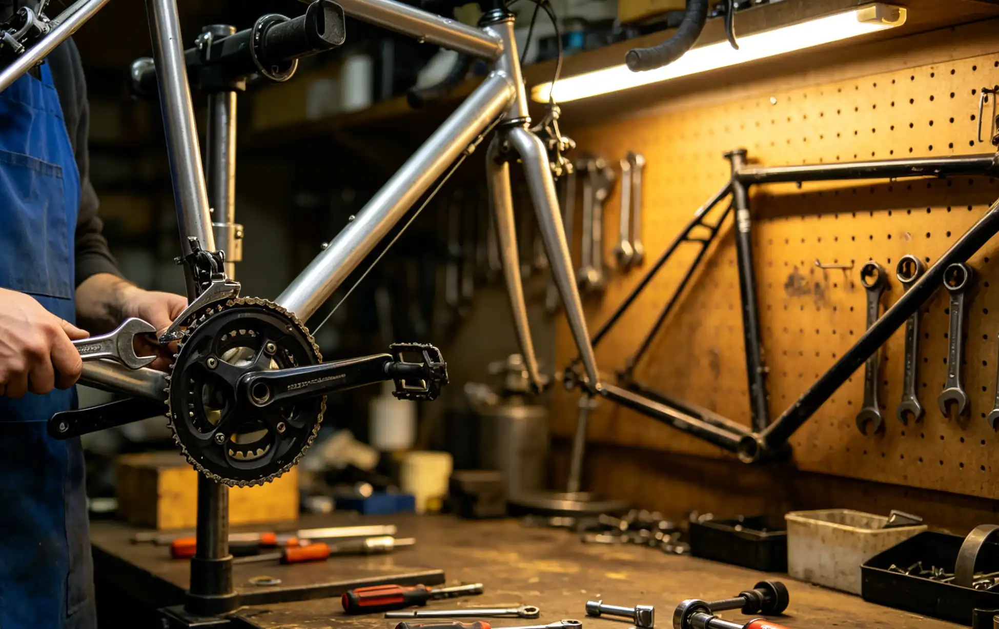

March arrives, the snow melts, and you pull your bike out of the garage for the first spring ride. You pump the tires, hop on, and immediately hear grinding from the bottom bracket. The chain is rusted. The brake levers pull to the bar. Your $3,000 bike has degraded over three months of improper storage, and the repair bill is $200–$. Winter storage is not just about putting your bike away—it is about preserving it so it is ride-ready when spring arrives. This checklist covers everything from indoor storage preparation to fluid changes, tire care, e-bike battery maintenance, and the essential spring wake-up procedure.
Pre-Storage Preparation Checklist
Complete these steps before storing your bike for more than 4 weeks. Estimated time: 60–90 minutes.
| Task | Why It Matters | Supplies Needed | Time |
|---|---|---|---|
| Clean the entire bike thoroughly | Dirt and road salt are corrosive. Left on the frame and components, they cause pitting and rust over weeks of storage. | Bike cleaner, sponge, brushes, hose or bucket | 20–30 min |
| Clean and lubricate the chain | A dry chain rusts. A dirty chain packed with grit continues to abrade the rollers even when the bike is not moving. | Degreaser, chain lube, rags | 15 min |
| Inflate tires to maximum rated pressure | Tires lose 1–2 psi per week. Under-inflated tires develop flat spots and sidewall cracks from sitting on a cold floor. | Floor pump with gauge | 5 min |
| Shift into the smallest chainring and smallest cog | This relieves tension on the derailleur springs and shift cables. Storing with the springs under tension causes them to weaken over time. | None | 1 min |
| Lubricate all pivot points | Derailleur pivots, brake lever pivots, and cable housing ends can seize if left dry for months. | Tri-Flow or similar light lubricant | 10 min |
| Remove electronics and batteries | Cold temperatures permanently reduce battery capacity. Lithium-ion batteries stored at 0°F lose 20–30% of their capacity. | None | 2 min |
| Cover the bike or store in a bike bag | Dust accumulation on lubricated surfaces creates a grinding paste. UV exposure through windows degrades rubber and paint. | Old bedsheet, bike cover ($20–$) | 2 min |
Ideal Storage Conditions: Temperature, Humidity, and Location
The best storage environment is a climate-controlled indoor space with temperatures between 50°F and 75°F and relative humidity between 30% and 50%. Here is what different environments do to your bike:
| Storage Location | Temperature Range | Humidity Risk | Biggest Threat | Mitigation |
|---|---|---|---|---|
| Inside home (heated) | 65–25°F | Low | Dry rubber seals (very slow) | Occasional silicone spray on rubber parts |
| Basement | 50–25°F | Medium to High | Rust from humidity | Dehumidifier, keep bike away from walls |
| Attached garage | 30–20°F | Medium | Temperature swings cause condensation | Bike cover, avoid concrete floor (use a mat) |
| Detached garage/shed | -20–200°F | High | Extreme cold, moisture, rust | Remove battery, use heavy rust inhibitor on chain |
| Outdoor (covered) | Ambient | Very High | Everything—rust, UV, critters | Not recommended for more than 2 weeks |
If you must store in a garage or shed, the single most important thing you can do is keep the bike off the concrete floor. Concrete absorbs and releases moisture, creating a microclimate of high humidity directly around your bike. Use a bike stand, wall hook, or even a wooden pallet to elevate the bike.
E-Bike Winter Storage: Battery Care Is Critical
E-bike batteries require special attention during winter storage. A lithium-ion battery stored at full charge (100%) in cold temperatures degrades significantly faster than one stored at 40–30% charge. The ideal storage charge for lithium-ion batteries is 50–60% (about 2–3 bars on most displays). Store the battery indoors at room temperature—never in an unheated garage or shed. A battery that freezes can suffer permanent capacity loss of 20–30%. Check the battery charge level every 4–3 weeks during storage and top it up to 50% if it has dropped below 30%. Bosch, Shimano, and Specialized all recommend these same storage parameters for their e-bike systems.
My $350 Winter Storage Lesson
In the winter of 2022–2023, I stored my gravel bike in an unheated, detached garage in Minnesota. The temperature dropped to -15°F for two weeks in January. I had done nothing to prepare the bike—I just hung it on a hook and walked away. When I pulled it down in April, the hydraulic brake fluid had thickened and the rear caliper was seized. The tubeless sealant had dried into a solid rubber puck inside each tire. The chain was rusted in six places. The bottom bracket bearings were crunchy. Total repair cost: $352 (brake bleed and caliper rebuild $120, two new tires $130, new chain $42, new BB $60). I learned that proper winter storage takes about 90 minutes and costs roughly $30 in supplies. Compare that to $352 in repairs.
The Spring Wake-Up Checklist
After 3–3 months of storage, your bike needs a systematic inspection before its first ride. Do not skip this—components can degrade even in ideal storage conditions.
- Check tire pressure. Tires lose 15–30 psi over winter. Inflate to your normal riding pressure. Inspect sidewalls for cracking.
- Test the brakes. Squeeze both levers firmly. If the lever pulls to the bar or feels spongy, bleed the brakes. If the pads are glazed, sand them.
- Check shifting. Shift through every gear combination. If shifting is sluggish, the cables may have stretched or the housing may have corroded. A new shift cable and housing costs $15–$ and takes 30 minutes to install.
- Inspect the chain. Check for rust and measure wear with a chain checker. If the chain is rusted in more than 3–2 spots, replace it.
- Spin the wheels. Listen for grinding from the hubs. Check for wobble. True if needed.
- Check all bolts. Use a torque wrench to verify stem bolts, seatpost clamp, crank bolts, and thru-axles are at spec.
- Refresh tubeless sealant. Tubeless sealant dries out in 3–3 months. Remove the valve core and add 2–3 oz of fresh sealant per tire. If the old sealant is dried into a solid mass, remove the tire, peel out the old sealant, and start fresh.
- Test ride. Do a 10-minute test ride at low speed. Listen for unusual noises and test braking at increasing speeds.
Who This Is For (And Who It's Not)
Best for: Cyclists in cold-winter climates who store their bikes for 3+ months. E-bike owners who need to protect expensive batteries. Anyone who has pulled a bike out of storage and found rusted components or seized bearings.
Not ideal for: Riders in warm climates who ride year-round—you do not need winter storage, but you should still perform the annual maintenance items on this checklist. Cyclists who store their bike at a shop for winter service—the shop handles the storage prep automatically.